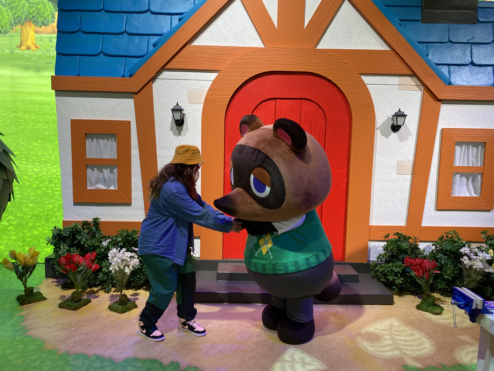
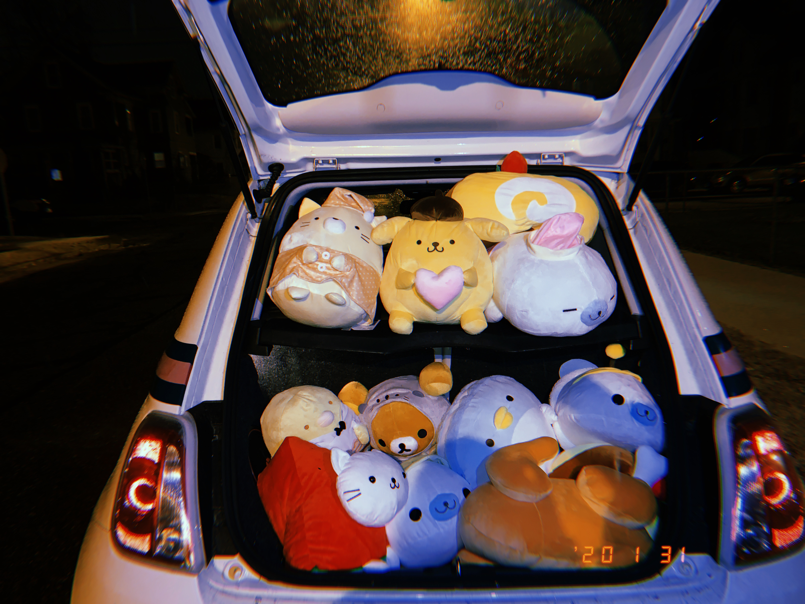

I have no shame, I was addicted to playing Animal Crossing: New Horizons when it first released and now after 9 months of not playing, I can barely play 5 minutes of it.
But will I sell my soul to a capitalist Raccoon again?
Heck Yea. No Cap.

This leads to one of my more expensive hobbies... Playing Japanese UFO Crane games at Round 1.
The second I won my first plushie, I was hooked.
However I do enjoy going to the arcade alot in general.
If I am not spending way too much money on plushies that take up 90% of my bed, I am also honing my skills in DDR LOL.
